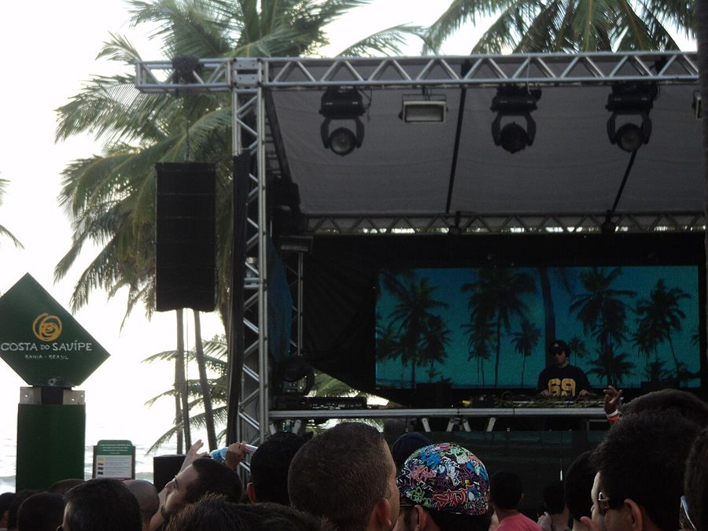

Peter Rauhofer: In it for the long haul



It would be an understatement to call Peter Rauhofer one of the most enduring and successful figures in house music: after nearly 30 years in the business, he’s remixed the likes of Madonna and Cher, held down one of New York’s longest residencies and even snared himself a Grammy. And on Anzac Eve he’ll be showing us why he’s one of the gay scene’s most respected DJs when he hits Homesexual. ITM’s Angus Paterson talks to Peter to give you the lowdown!
It’s hard not to be impressed when Peter Rauhofer rattles of his list of achievements. Before the Austrian born DJ/producer went anywhere near the turntables he worked extensively in the music industry. After an eight-year stint as A&R director at the Austrian label GIG/BMG Records and establishing a solid reputation as a DJ in Vienna, he introduced himself to American audiences in the early 90’s with his club hits under the Club 69 moniker, which he later used a variation of when he began his successful label Star 69 Records that he still runs today. He’s released a huge number of singles, albums and compilations under various pseudonyms, not to mention the remixes he’s done for the likes of Madonna, Cher, Donna Summer, Pet Shop Boys and many more. He even snared himself a Grammy in 2000 for his efforts!
Now based in New York, he’s been a fixture on that city’s gay scene for over a decade. He was a resident at legendary gay club The Roxy for a massive eight years, but barely a month ago the club was closed for good after its lease ran out. But a new club Stereo has opened in its place, direct from Montreal, with Rauhoferone taking over resident duties. So his longstanding association with the New York gay scene won’t be coming to an end any time soon. “In one sense I’m sad to see the Roxy go, but in another I’m not,” he says. “You know, New York is always changing and I’m surprised it lasted that long.”
Speaking to me over the phone from his office in New York, he speaks with an Austrian accent that hasn’t lost any of its thickness since he relocated to the States all those years ago. After more than 20 years working as a DJ he’s seen a lot of changes, and learnt the ins and outs of what it takes to work a crowd: whether they be gay or straight. Though he’s built an enviable reputation within the gay scene, he points out that for the first 10 years of his DJ career he was playing to mainly straight crowds.
“Back then in Europe and particularly Austria the gay scene was very small, so I started out in straight clubs and was used to those crowds. And then when I came to America I started spinning in gay clubs, because that’s where the records I was playing were getting the best responses. But my work within the gay community is extremely important to me: it’s my business as well as my life.”
In terms of the differences between the two scenes, Rauhofer confirms it is a completely different vibe. “The gay crowd is way pickier than a straight crowd. They’re a lot more challenging to play to, but if they accept you then you know you’re doing something right. There’s a lot more famous straight-room DJs than gay DJs, and I think that’s the reason why. With that said, I still play to at a lot of mixed crowds very regularly, and the more mixed it is the better the vibe! But it’s rare these days that I’d play to an exclusively straight crowd.”
Star 69 Records continues to keep on strong in 2007, and Rauhofer says to keep an eye out for Offer Nissim, an Israeli DJ/producer making waves around the world who might also be playing Homesexual in the near future… Tasked with scouting for new talent, do Peter’s responsibilities as a record label owner ever take preference over those he has as a DJ? “Sometimes people ask me, if you could only choose one thing what would it be? I never know how to answer it because everything is connected. I wouldn’t ever want to give up any of what I do: one thing always leads into the other, being a producer keeps me connected as a DJ and so forth.”
It’s been over five years since we last saw Rauhofer DJing in Australia, as he aint a fan of the long of the long plane flights. But when he hits the main floor of Home Nightclub on Tuesday night he’ll be bring over 20 years of DJing experience to make up for it. “I’m really excited to get back there again, I know I haven’t been there for a lot of years but if it wasn’t that far away, I’d be there more often!”
So what can we expect from his set at Homesexual? The unexpected, apparently. “I like to be spontaneous. I’m a DJ who never really plans ahead, if you look in my CD case it’s a big mess in there! I like to keep it like that, otherwise I get into a ritual of always playing the same thing. I always try to be flexible and not too preprepared, and the crowd is what motivates me,” he says.
“I like to play long sets and I like to take people on a journey, I just don’t stick really with one sound. I might play a lot of tribal and underground, with some vocals and classics: I always try to play the best of the best. I’m very true to the original New York underground vibe, which is mainly sexy with a dash of darkness.”
Catch Peter Rauhofer when he plays Homesexual in Sydney on Anzac Day Eve, Tuesday April 24th, at Home Nightclub.